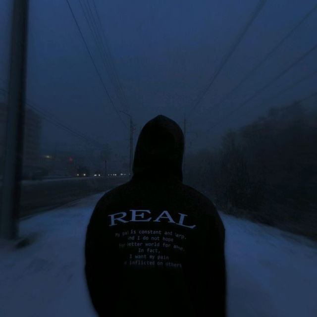

HTML, CSS va JS yordamida har qanday murakkablikdagi, interaktiv va chiroyli veb-saytlarni yarataman.
Mukammal admin paneliga ega, mijozlar bilan ishlash va savdo-sotiq (korzinka) tizimlariga ega botlar.
Foydalanuvchilarni o'ziga tortadigan "Luxury Dark" va boshqa zamonaviy UI/UX yechimlar.
Zamonaviy interfeys va animatsiyalarga ega, to'liq moslashuvchan (responsive) restauran sayti.
Saytga o'tishKorzinka tizimi, buyurtmalarni qabul qilish va mukammal admin menyusiga ega bot.
Botga o'tishJavaScript yordamida yozilgan murakkab funksionallikka ega shaxsiy portfolio va blog.
Saytga o'tish